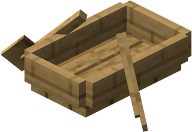

Goedzo! Je hebt een boot gecraft! Nu kun je straks naar de schat varen!
Hee! Wat ligt daar op de bodem van de boot?


Tijd om je hersens even goed te laten kraken! Schrijf de antwoorden van deze sommen in de puzzel op de kaart!
Horizontaal:
1. 78 - 27
2. 158 x 4
5. 640 : 8
6. 331 + 55
8. 102 : 2
9. 784 - 67
10. 290 + 93
13. 7 x 9
Verticaal:
3. 88 - 55
4. 125 : 5
7. 141 + 412
11. 156 - 62
12. 134 : 2
14. 29 + 54
15. 47 + 45